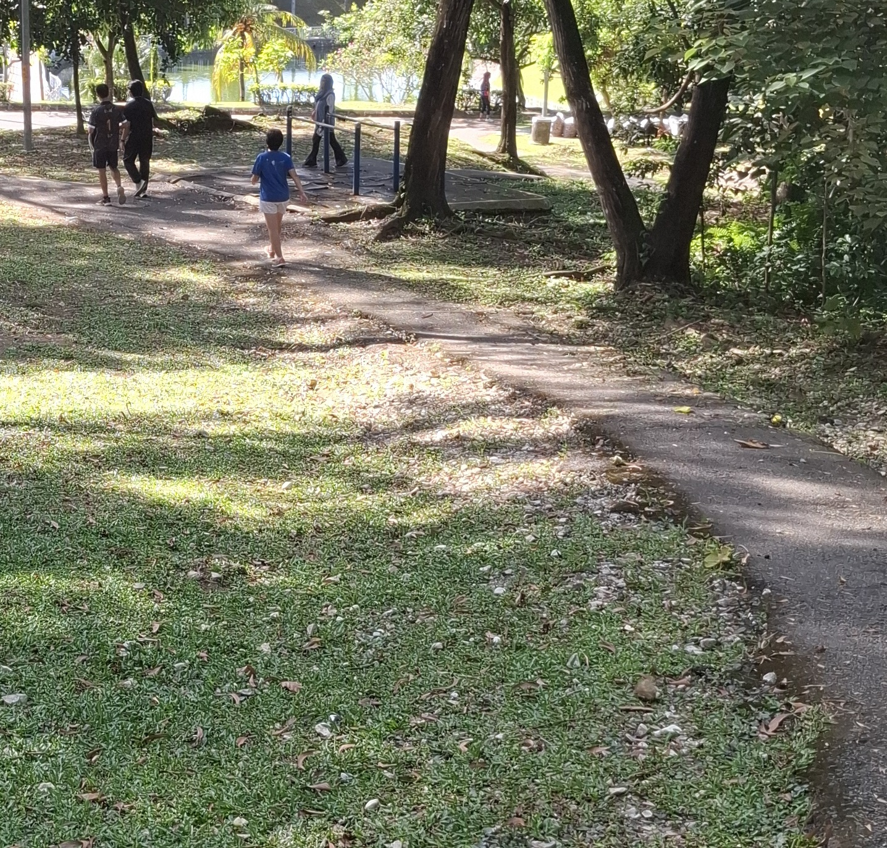
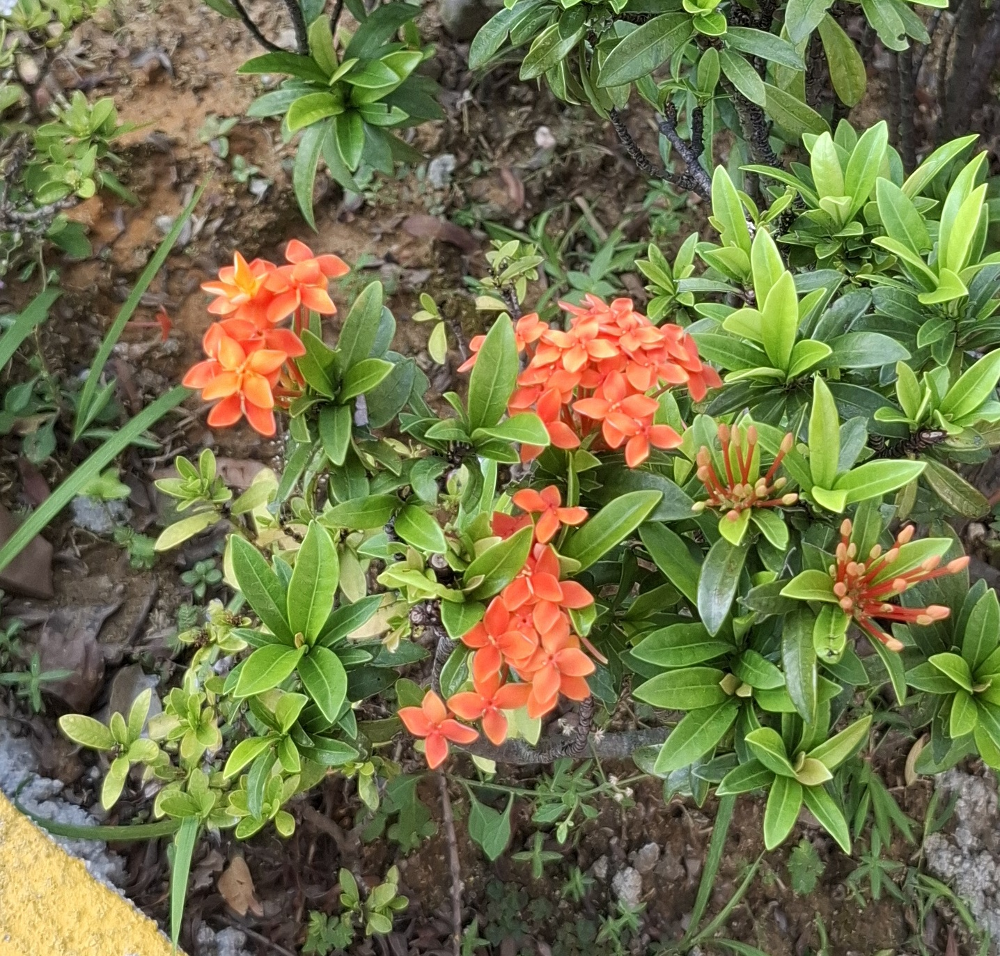

The Nature Jog Blog is a space for members to share personal reflections and stories from their jogging experiences, focusing on quiet thoughts, surprising moments, and lessons learned rather than training tips or route guides.
Jogging often provides a moment of solitude and clarity, allowing runners to process thoughts, generate ideas, and notice small details they might otherwise overlook.
Blog entries capture a variety of experiences, from the feeling of rain and wind during a run to observing new flowers or familiar animals along the path. Each post blends movement, mindfulness, and the environment, fostering a community where joggers inspire one another to not only move but also to observe, reflect, and connect with the world around them.

-16/6/2025-

-17/6/2025-